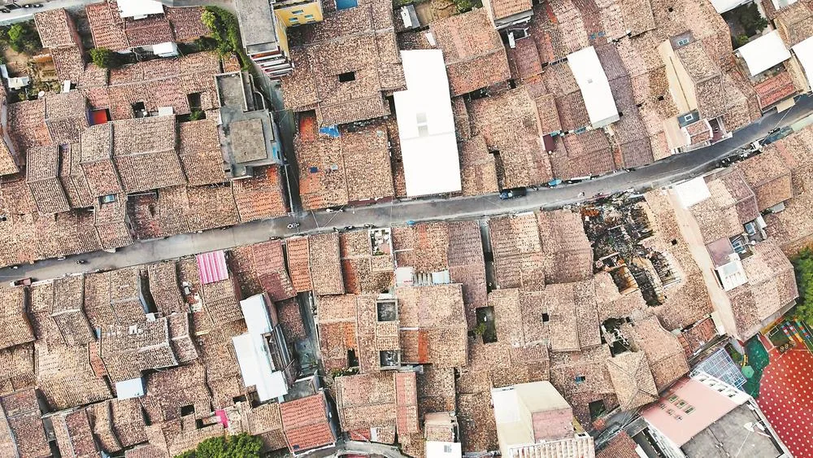

仙游县：千年古街续文脉 浓浓烟火最动人
Xianyou County: A Millennium-Old Historic Street Preserves Its Heritage

中文原文
2025-05-13 10:02:34 陈盛钟 来源：东南网
红灯笼、石板路、青瓦房……5月的仙游，阳光和煦、微风不燥，漫步在鱼牙顶街区，街巷纵横交错，两旁店铺林立，人群熙熙攘攘，市井气息扑面而来。
上月底，省政府公布第六批省级历史文化街区名单，仙游县鱼牙顶历史文化街区 榜上有名。该街区地处仙游县城西侧，其历史可追溯至唐代，千百年来，其所属的西门外西市片区一直市井喧嚣、商贾云集。近年来，仙游县以“修旧如旧，保护为主”为核心理念，对鱼牙顶街区进行系统性保护、修缮，保留原住民生活场景和烟火气息，实现“政府搭台、居民唱戏” 的活态传承。如今，这片历经岁月雕琢的老街区重现芳华，古典与时尚在这里交相辉映，传统文化与现代文明相融共生。
千年老街，悠悠乡愁
走进和平路22号打铁铺，炉火熊熊，“叮叮当当”的打铁声不绝于耳。铁匠郑贤星挥舞着大锤，一下又一下地砸在烧红的铁块上，火星四溅。店内摆放着各种铁制器具，柴刀、锄头、铁锅等，每一件都凝聚着这位与铁艺相伴了近50年的老铁匠的心血。
“要找老手艺，就去鱼牙顶！”这里是当地老一辈手工艺人坚守的阵地。众多手工艺从业者凭着一己之力，延续着传统行当，为鱼牙顶老街区构筑起一道独特的风景。
年过七旬的剃头匠林德记已在理发行业摸爬滚打超过半个世纪，是当地远近闻名的老匠人，他坦言对老街有着难以割舍的情结。刮脸、剃须、老发型，不追新潮，林德记始终秉承着原汁原味的理发手艺。他的理发店没有时尚的招牌，店内设施也堪称古董级别，手动推子、老式镜子、旋转理发椅，映照出岁月的沧桑，也承载了无数老主顾的回忆。
“鱼牙顶街区是莆仙地区多样商贸和居住建筑的集中展现。”仙游县住建局风貌办负责人郑溢介绍，鱼牙顶街区包括和平路、民主路、纸山巷、洋山巷等两路八巷，街区范围面积21.4公顷。其距县城中心老县衙位置约1.2公里，距南侧木兰溪不到500米，是向西通往永春、德化的主要陆路通道，也是通往会仙码头的商贸集散中心，成为闽中重要的商贸集散地之一。
据考证，鱼牙顶街区所在的西门街市始于唐代仙游置县时，到宋元时已初具规模，明代时商店网点遍布，商业活动辐辏四境。清末，街区内的天地坛成为全县粮食集贸的主要市场，纸山为山货牲畜交易地，和平路成为海产品交易地。民国时期，周边街区得到连片开发，业态多为布匹、砂糖、肥料、粮油、木材等行业，成为境内商业、金融活动的中心。
新中国成立后，西门街市设立了福州贸易公司仙游营业处、鲤湖中百公司、日用百货经理部、医药公司、糖烟酒公司，以及针织品、文化用品等专业公司门市部。 1984年，洪桥燕顶县中心市场建成后，仙游城关商贸中心发生了转移，但西门街市还一直延续着商业经营的功能。
如今，行走在鱼牙顶街区，仿佛翻开一部立体的千年商史与建筑典籍。浓浓的人间烟火气，是鱼牙顶最动人的底色。2000多居民在此生息，记录着平凡日子的点点滴滴。街区内巷弄曲径通幽，两侧老屋鳞次栉比，汇聚了首饰店、中药店、打铁铺、农具铺、理发店、裁缝店等众多历史悠久的传统老字号商铺，承载了一代代仙游人美好的乡愁记忆。
“街”续文脉，焕新活力
“风急天高猿啸哀，渚清沙白鸟飞回……”9日上午，仙游城西中心小学石峰书院内传出琅琅书声，20多名诵读班学生沉浸于国学经典的诵读之中，开启一场跨越时空的心灵对话。
地处天地坛巷的城西中心小学，前身为创办于1905年的私立孟晋高等小学堂，校内至今保存着石峰书院、为松书院、红砖楼等历史建筑。其中，石峰书院始建于清咸丰年间，历经多次修缮。如今，这里已被改造成国学堂，开设国学诵读、书法、绘画等多门特色课程，成为学生传统文化教育的摇篮。
为松书院原为建于明崇祯年间的为松庵，门前有一口清嘉庆年间的古井，至今保存完好。目前，书院已设置成校园德育基地和校史馆。
鱼牙顶街区内历史环境要素丰富，保留着天地坛、节孝坊、石峰书院、为松书院、木兰养性堂 等历史建筑。街区内建筑多为1～2层的土木结构历史传统风貌建筑，柴栏厝民居、中西合璧式建筑等多元风格建筑林立，有完整的古厝院落格局空间，梁、柱、门、窗等建筑细部造型雕饰精美，图案考究。
天地坛，又称社稷坛，创建于宋乾道初年（1165年），坛分前后两殿，前台四柱撑起双层飞檐，后殿供奉兴化戏的祖师爷田公元帅。2023年，天地坛重新修缮，改造为十字社区老年活动中心，设置棋牌室、健身室、居家养老服务室等，成为社区老年人“老有所依，老有所乐”的温馨乐园。
作为街区的文化地标，建于清乾隆年间的青石牌坊——木兰节孝坊以“双凤朝阳”石雕闻名。2016年，仙游县对节孝坊实施修缮，并增设石栏杆、香炉等设施，同步开展街区环境整治。其时，还意外发现坊顶暗格中藏有清代维修账本竹简，被专家称为“时光宝盒”。
近年来，仙游县持续推进鱼牙顶街区保护工作，实施基础设施改造工程，对片区雨污水管网进行改造；启动文创街区项目，将废弃粮仓改造为非遗工坊，邀请老裁缝铺开展定制旗袍业务，并开设盘扣技艺教学，打造沉浸式非遗互动体验。
“鱼牙顶街区具有较高的历史价值、科学价值和艺术价值。”仙游县住建局局长杨兴介绍，目前，该街区已完成历史文化资源调查，正在委托中国城市规划设计研究院编制《仙游古城历史格局与文化内涵研究》 ，研究其在古城格局中的地位，划定了街区的建议保护范围。
据悉，仙游县将立足“保护优先、活态传承、文旅融合”的发展理念，系统推进历史建筑修缮、传统风貌修复及基础设施升级，通过“留形、留魂、留人、留文” ，让鱼牙顶街区成为莆商精神的原点记忆、市井生活的当代标本、文旅融合的示范标杆，最终实现千年古街向活力街区的美丽蝶变。
English translation
May 13, 2025, 10:02:34 | By Chen Shengzhong | Source: Fjsen.com
Red lanterns, stone-paved roads, and grey-tiled houses… In May, Xianyou, a county in Fujian Province, enjoys warm sunshine and gentle breezes. Wandering through Yuyading Block in Xianyou, one is greeted by crisscrossing lanes, rows of shops, and bustling crowds, with a strong vibe of lively daily life filling the air.
At the end of last month, the Fujian Provincial Government announced the list of the 6th batch of provincial-level Historical and Cultural Blocks, and Yuyading Historical and Cultural Block in Xianyou County was included. Located on the west side of Xianyou County’s downtown area, the block has a history dating back to the Tang Dynasty (618-907 AD). For thousands of years, the Ximenwai West Market Area, to which Yuyading Block belongs, has been a busy commercial hub. In recent years, Xianyou County has adhered to the core concept of “restoring old buildings to their original appearance, with protection as the priority,” carrying out systematic protection and renovation of Yuyading Block. It has preserved the living scenes of local residents and the vibe of daily life, achieving “living inheritance” under the model of “the government provides support while residents take the lead.” Today, in this ancient block, classic elegance blends with modern style, and traditional culture coexists harmoniously with contemporary civilization.
A Millennium-Old Street, Enduring Nostalgia
Step inside the blacksmith’s shop at No. 22 Heping Road, and you’ll be greeted by a glowing forge, with the steady, resonant clanging of ironwork filling the air. Blacksmith Zheng Xianxing wields a heavy hammer, striking the red-hot metal again and again, sending sparks flying. On show are various hand-forged iron tools: chopping knives, hoes, iron pots, and more. Each piece carries the skill and dedication of this seasoned blacksmith, who has devoted nearly 50 years to his craft.
“If you’re looking for traditional crafts, go to Yuyading!” This is where local older craftspeople have kept their traditions alive. Many craftspeople work on their own to carry on traditional skills, making the old Yuyading neighborhood a special sight.
Now in his seventies, barber Lin Deji has been working in the trade for more than half a century and is a well-known local veteran. He openly speaks of his deep attachment to the old street. He never chases modern trends. Instead, he sticks to traditional barbering skills: face-shaving, beard-trimming, and classic hairstyles, keeping his craft authentic and unchanged. His barbershop has no fancy modern sign, and the interior is full of vintage items such as manual clippers, old mirrors, and swivel barber chairs. All bear the marks of time and hold precious memories for generations of regular customers.
“Yuyading Historic Block showcases the diverse commercial and residential architecture of the Puxian region,” said Zheng Yi, an official overseeing urban conservation at the Xianyou County Housing and Urban-Rural Development Bureau.
Spanning 21.4 hectares, the block consists of two main roads and eight alleys, including Heping Road, Minzhu Road, Zhishan Alley and Yangshan Alley.
It sits about 1.2 kilometers from the old county government compound in the historic heart of the town. It is less than 500 meters north of the Mulan River. As a key overland route west to Yongchun and Dehua, it also served as a trade hub connected to Huixian Wharf and became one of the most important commercial centers in central Fujian.
Research shows that Ximen Market, where Yuyading Historic Block stands, originated when Xianyou was established as a county in the Tang Dynasty. It took shape during the Song and Yuan dynasties (960–1368). By the Ming Dynasty (1368–1644), shops could be found everywhere, and business activities flourished across the whole region. In the late Qing Dynasty (1644–1912), Tiandi Altar in the block became the main grain market of the county. Zhishan Area served as a trading hub for mountain products and livestock, while Heping Road was home to seafood trade. During the Republican period (1912–1949), adjacent blocks were developed as a unified area. Businesses here mainly dealt in cloth, sugar, fertilizers, grain, oil and timber, turning the district into the local center of commerce and finance.
After the founding of the People’s Republic of China, Ximenwai Market saw the establishment of Xianyou Business Office of Fuzhou Trading Company, Lihu Zhongbai Company, Daily Necessities Manager Department, Pharmaceutical Company, Sugar, Tobacco and Alcohol Company, as well as specialty stores for knitwear and cultural goods. In 1984, after the completion of Hongqiao Yanding County Central Market, the commercial center of Xianyou’s county seat shifted, but Ximenwai Market continued to function as a commercial hub.
Today, a walk through Yuyading Historic Block is like opening a vivid volume documenting a millennium of commerce and architecture. Its most touching charm lies in its rich, authentic everyday vitality. Over 2,000 residents live here, quietly cherishing the simple moments of daily life. The block’s winding lanes are flanked by rows of old houses. It is home to many long-established traditional shops, including jewelry stores, traditional Chinese medicine pharmacies, blacksmith shops, farm tool stores, barbershops and tailor shops. All of them carry the warm, nostalgic memories of generations of Xianyou people.
Inheriting Cultural Legacy, Rejuvenating Vitality
“The wind so swift, the sky so wide, apes wail and cry; Water so clear and beach so white, birds wheel and fly…” On the morning of the 9th, the sound of loud reading echoed from Shifeng Academy of Xianyou West City Central Primary School. More than 20 students from the recitation class immersed themselves in reading classic Chinese poems, opening a spiritual dialogue across time.
West City Central Primary School in Tianditan Lane has its origins in the Private Mengjin Higher Primary School, founded in 1905. Historic buildings still stand on its campus, including Shifeng Academy, Weisong Academy and the Red-Brick Building.
Shifeng Academy was first built during the Xianfeng reign of the Qing Dynasty (1851–1861) and has been restored several times.
It has now been converted into a traditional Chinese culture academy, offering special courses such as classics recitation, calligraphy and painting. It is now a nurturing ground for students to learn traditional Chinese culture.
Weisong Academy was originally Weisong Nunnery, built during the Chongzhen period of the Ming Dynasty (1628-1644 AD). In front of the academy stands an ancient well from the Jiaqing period of the Qing Dynasty (1796-1820 AD), which remains well-preserved. Currently, the academy serves as the school’s moral education base and school history museum.
Yuyading Block is rich in historical elements, preserving historical buildings such as Tiandi Altar, Jiexiao Archway, Shifeng Academy, Weisong Academy, and Mulan Yangxing Hall. Most buildings in the block are 1- to 2-story historical structures with earth-wood frames, including Chailancuo , a traditional Fujian timber-framed house, and Sino-Western fusion-style buildings. The block retains complete courtyard layouts of ancient houses, with exquisitely carved details on beams, columns, doors, and windows, featuring elaborate patterns.
Tiandi Altar, also known as Altar of Land and Grain, was built in the early Qiandao period of the Song Dynasty (1165 AD). It consists of front and rear halls: the front platform is supported by four pillars with a double-eaved roof, and the rear hall enshrines Tianyuan Shuai, the patron saint of Xinghua Opera. In 2023, Tiandi Altar was renovated and transformed into a senior activity center for Shizi Community, with chess rooms, fitness rooms, and home-based elderly care service rooms, becoming a warm haven where the elderly “have support and joy in their later years.”
As a cultural landmark of the block, the Mulan Filial Piety Memorial Arch is a bluestone arch built during the Qianlong reign of the Qing Dynasty (1736–1795). It is famous for its stone carvings of “Two Phoenixes Facing the Sun”. In 2016, Xianyou County restored the arch, installed stone railings, incense burners and other fixtures, and carried out environmental improvement across the block. During the restoration, bamboo slips containing Qing Dynasty repair records were unexpectedly found in a hidden chamber at the top of the arch. Experts have called these slips a “time capsule”.
In recent years, Xianyou County has steadily advanced the conservation of Yuyading Block. It has carried out infrastructure upgrades, including improvements to the rainwater and sewage pipe networks. The county also launched a cultural and creative quarter project, turning a disused grain warehouse into an intangible cultural heritage workshop. It has invited long-established tailors to provide custom cheongsam services and held classes on traditional frog-fastener making, creating an immersive interactive experience of intangible cultural heritage.
“Yuyading Block boasts significant historical, scientific and artistic value,” said Yang Xing, Director of the Xianyou County Housing and Urban-Rural Development Bureau.
A survey of the block’s historical and cultural resources has been completed. The county has entrusted the China Academy of Urban Planning and Design with compiling the Study on the Historical Pattern and Cultural Connotation of Xianyou Ancient City. The study assesses the block’s position within the ancient city’s layout and sets out a proposed conservation zone for the area.
Xianyou County plans to revitalize the historic Yuyading Block by prioritizing preservation, cultural continuity, and tourism integration. Efforts will focus on restoring historic buildings, maintaining traditional styles, and upgrading infrastructure. The goal is to preserve the area’s physical form, cultural essence, and local way of life, turning it into a vibrant district that captures the spirit of Puxian merchants, reflects everyday urban life, and serves as a model for cultural and tourism development. In doing so, the millennium-old street will be transformed into a dynamic community.